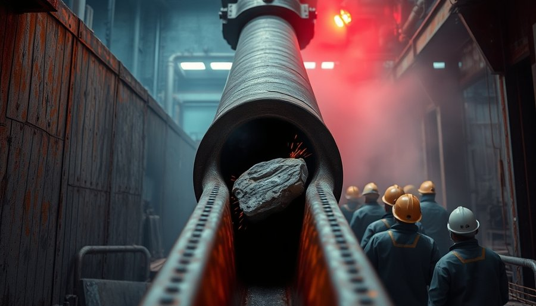
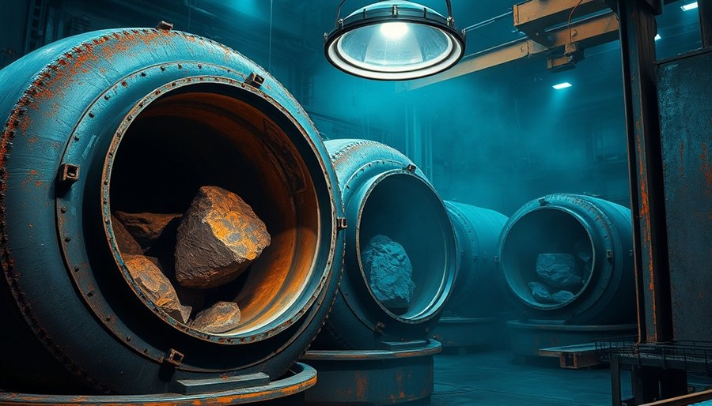
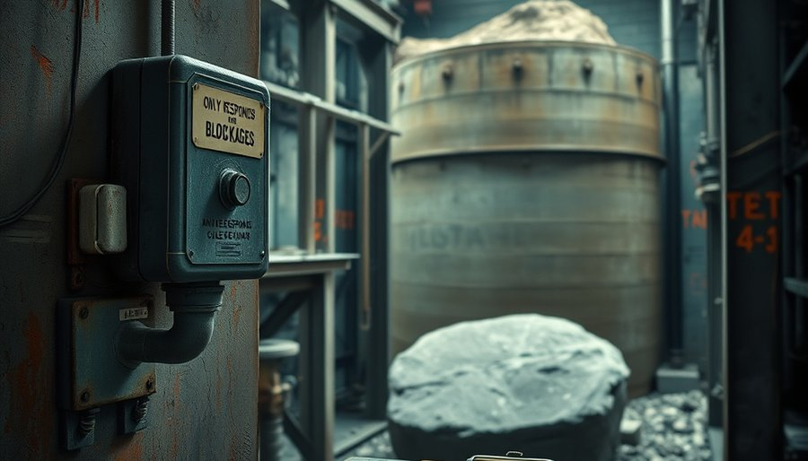

肾结石的疼痛，来自堵塞。一颗几毫米的小石头从肾里掉出来，滑进输尿管，卡在某个狭窄处。输尿管开始痉挛，拼命想把石头挤下去。这种平滑肌的剧烈收缩，直接触发内脏痛觉，人瞬间疼到脸色煞白、呕吐、直不起腰。急诊室里最常见的，就是这类小结石引发的肾绞痛。
但石头的大小和它惹祸的能力，在这里是反着来的。一颗直径不到五毫米的石头，因为够小，才能离开肾脏进入输尿管；因为不够光滑，才会卡住；因为卡住，才会拉响全身最高级别的警报。而那些真正大的结石，直径两三厘米，甚至填满整个肾盏的鹿角形结石，反而常年安静。它们太大，掉不进输尿管；它们待在肾盏里，不堵水路，不摩擦管壁，不触发痉挛。一个人可以带着一颗乒乓球大小的肾结石生活十年，毫无知觉，直到体检单上出现那行字。
这种错位还牵连到人们对食物的怀疑。开头那个人问的牛奶鸡蛋，在医学证据链里排得很靠后。肾结石的主要推手是高盐、高蛋白、喝水少、含糖饮料。尿液里的钙、尿酸、草酸长期过饱和，结晶析出是物理过程。牛奶里的钙，在肠道里会和草酸结合，随粪便排出，反而减少了草酸被吸收入血的份额。真正容易把结石喂大的，是空腹吞下的钙片。没有食物中的草酸跟它结合，钙直接入血，再从尿里排出去，白白增加尿钙浓度。一杯牛奶保护肾脏，一片钙片却可能帮倒忙。身体的逻辑，从来不是直觉的简单加减。

这几年感觉身边得结石的人变多了，石头也越来越大。这个体感要拆成两半看。
一半是真的。饮食结构确实变了：外卖里的盐、餐盘里的肉、取代白水的含糖饮料，以十年为单位，把尿液的钙、尿酸和草酸浓度推过饱和线。久坐让尿液滞留，小结石没有机会被冲刷排出。生活方式写进肉体的账单，结石是其中一行。
另一半是发现率变了。二十年前，一个人如果没疼过，可能一辈子不知道自己肾里藏着石头。现在体检普及，超声和CT往下探，以前不吭声的结石一次检查就显形。查出结石的人变多，和得结石的人变多，是两件事，但体感上都被记成同一件事。这就像路灯越亮，地上掉的钱越显眼。不是捡钱的人变多了，是灯变了。
这两半合在一起，制造了一个普遍的错觉：结石危机正在爆发。实际上，一部分增长是真实的代谢代价，另一部分只是我们终于照了进去。那些被体检单提前发现的沉默大结石，恰好是过去最容易被漏掉、也最需要被管理的类型。它们不疼，所以过去没人管；现在被看见了，但看见以后，人往往还是用不疼来判断要不要管。

疼痛是演化给身体装的报警器。但这个报警器的设计规格很窄：它只对急性威胁灵敏。血管破了、肠子堵了、管子卡了，立刻响。慢性侵蚀，比如结石慢慢钝化肾功能、血管一点点硬化、结节缓缓生长，报警器一律哑火。
这不是身体的缺陷。演化从来没有为慢慢死准备过警报。在漫长的进化史里，慢性病根本不构成选择压力：多数个体在慢性病发作之前，已经被感染、饥饿或创伤淘汰了。于是我们继承了一套对慢性威胁近乎沉默的生理系统，却活在一个慢性病成为主要负担的时代。
人反过来把不疼默认成没事，把疼过记成得过。一次肾绞痛扛过去，石头可能排掉了，也可能只是挪了个位置继续长大。没疼过的人，可能正带着一颗鹿角形结石，肾功能在每年的体检单上悄悄往下掉。最需要被管理的病灶，在最安静的阶段被完全托管给一张化验单。如果那张化验单没有被认真看过，就等于托管给了运气。
身体里的石头不是玄学。它是工业化生活方式以十年为单位，以尿为终端，把盐和结晶沉淀进一代人的肾里。疼过的人以为扛过了，没疼的人可能正在被结算。体检单上那行字，才是警报。
尾声
并不是所有大结石都永远沉默。一旦它移动位置、堵住出口或引发感染，同样会触发剧痛甚至尿毒症。只是在这个节点到来之前，它给的准备时间远比小结石长，长到足以让人误以为万事大吉。这个报警器的盲区不限于肾脏，高血压、早期糖尿病、骨质疏松，都在同一套逻辑里运行。
小汪老师的成长观察笔记